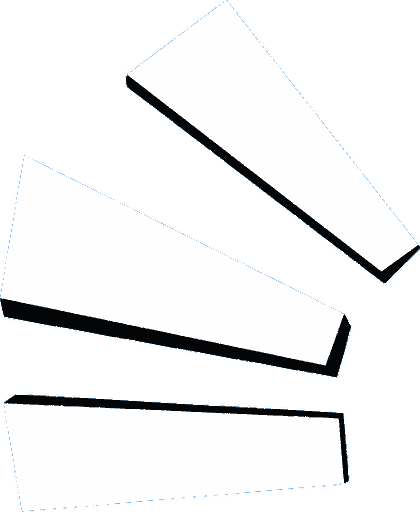
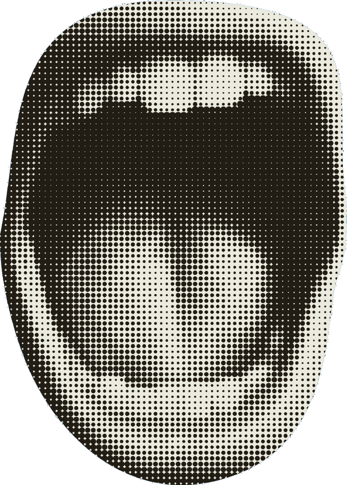
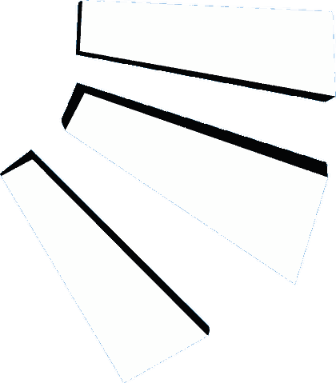
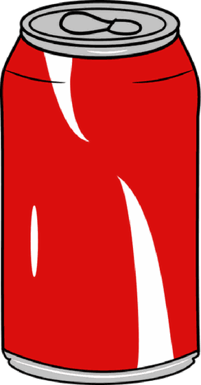

Se necesita permiso del micrófono para medir tu grito.
PREPÁRATE

Souvenir
Los cambios se guardan en esta tablet.
Elige el logo que se muestra en pantalla. También puedes fijarlo por URL con ?marca=mirasol o ?marca=proauto.
Fija HABLA en silencio/charla normal y GRITO con un grito real. Cuanto más separados, más gradual el medidor.
Haz varios gritos (flojo, normal, a todo pulmón) y mira qué premio daría cada uno con la calibración de ahora. Así afinas los rangos antes del evento.
Los dibujos (llavero / gorra / mochila) son fijos, salidos del arte de la campaña. Aquí solo se cambia el texto.
El premio mayor no se gana solo por gritar fuerte: se «arma» en un intento al azar. Mientras no está armado, el medidor se topa justo debajo para no delatarlo.